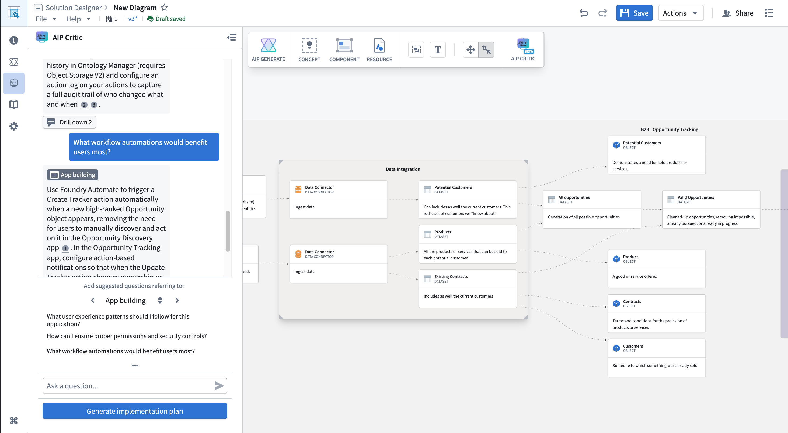
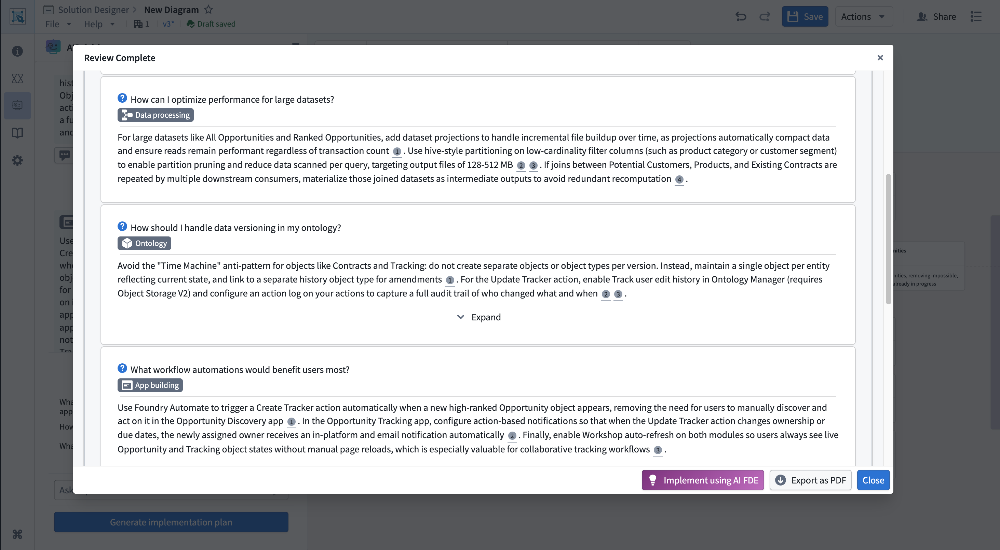

AIP Critic is an AI-powered diagram review and analysis tool that helps you evaluate your solution architecture through an interactive conversation. AIP Critic examines your diagram, organizes it into logical sections, and answers questions about your architecture's design, implementation approach, and potential improvements. Within Solution Designer, AIP Critic provides a chat-based interface where you can ask questions about your diagram and receive contextual guidance. The tool automatically analyzes your diagram's structure, categorizes components, and offers insights based on Palantir platform best practices.
Use AIP Critic to:
To open AIP Critic, select the AIP Critic icon in your Solution Designer diagram's toolbar. The AIP Critic panel opens on the left side of your workspace.

AIP Critic automatically organizes the nodes in your diagram into the following sections:
This organization helps AIP Critic provide context-aware responses and suggested questions relevant to each part of your architecture.
You can ask AIP Critic questions about your diagram in natural language. Type your question in the text input at the bottom of the AIP Critic panel and press Enter on your keyboard or select Send.
Example questions you might ask:
AIP Critic will analyze your diagram and provide a response based on the components, connections, and overall structure of your solution architecture.
After receiving a response from AIP Critic, you can drill down into specific parts of the answer by asking follow-up questions. AIP Critic maintains the context of the conversation, allowing you to explore topics in greater depth.
To drill down on a response, review the initial response from AIP Critic and type a follow-up question that references or expands on the previous response. AIP Critic will provide additional details while maintaining the conversation context.
Drill-down conversations allow you to:
AIP Critic can generate a structured implementation plan based on your architecture diagram. The implementation plan dialog provides a step-by-step breakdown of how to build your solution, including:
To generate an implementation plan, select Generate implementation plan at the bottom of the AIP Critic panel. AIP Critic analyzes your diagram and creates a structured plan before opening the implementation plan dialog, displaying the plan with collapsible sections for each phase. Review the plan, expand sections to see details, and use it as a guide for building your solution.

The implementation plan can be referenced alongside your diagram as you build, helping ensure you follow best practices and build components in the correct order. Additionally, you can use AI FDE to accelerate the actual construction of resources in your architecture. You can also export the implementation plan as a PDF for documentation or sharing with your team.
Your conversation with AIP Critic is automatically saved with your diagram. When you close and reopen a saved diagram, your previous conversation history will be restored, allowing you to continue the review where you left off.
When using AIP Critic, consider the following best practices: